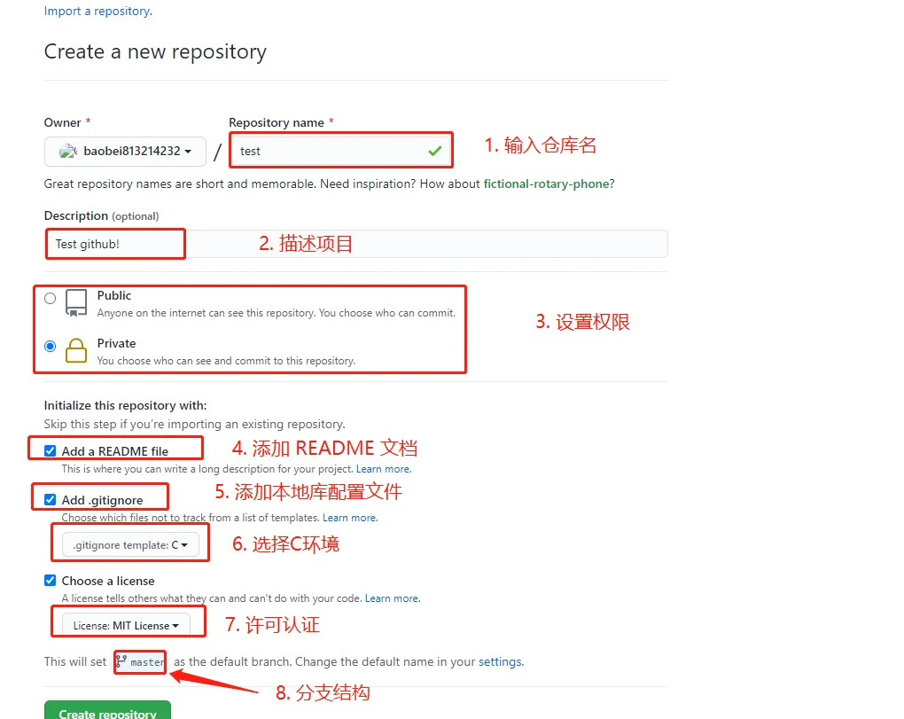
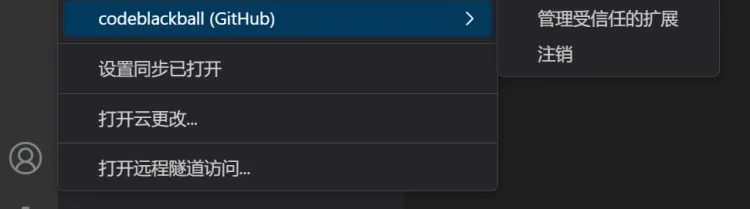
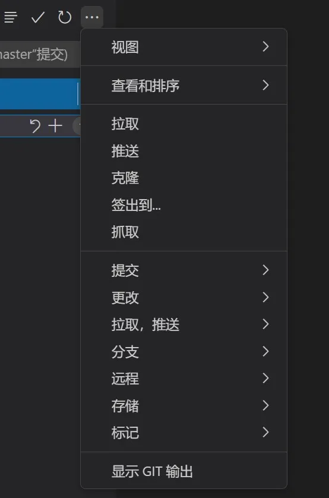
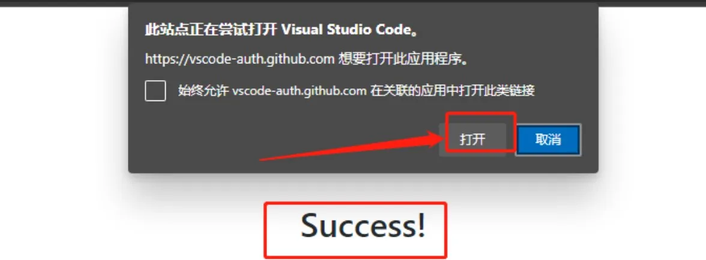
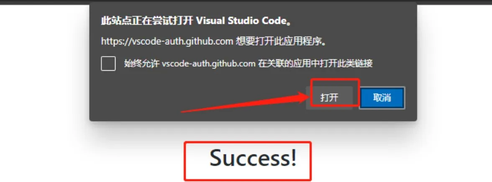
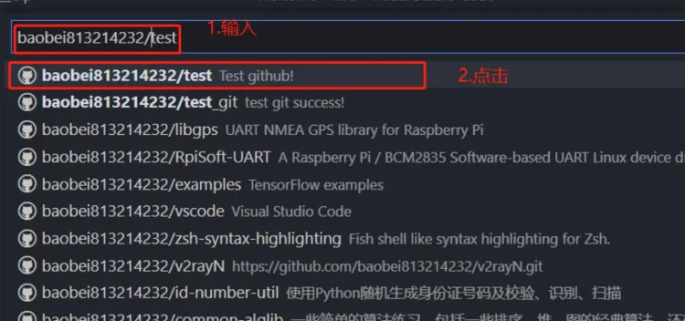
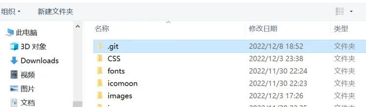
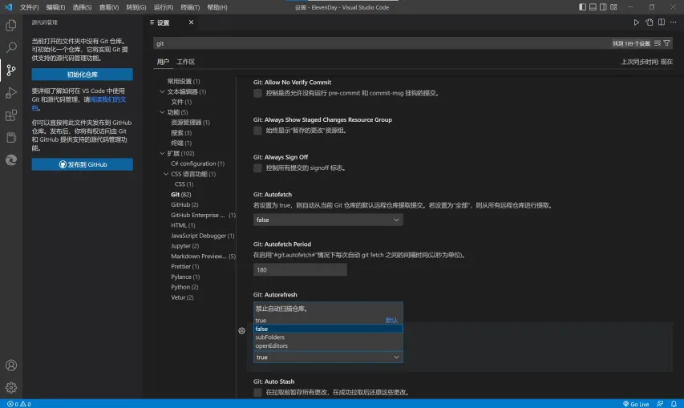

以Code为开发者用户界面，利用git和Github实现源代码管理
标签: Github, git, 源码, 管理
VSCode的左侧边栏提供了源代码管理这个选项，使用它能很好的帮助我们使用git进行管理，这里介绍下VSCode运用GitHub实现源代码管理

准备工具
- 安装git并添加到环境变量。
- Git安装教程：https://blog.csdn.net/qq_43715354/article/details/108638061%20
- 安装Code
基本流程
创建仓库
进入github官网，注册，登录，在右上角添加一个仓库(repository)

下面是一个 repository 最基本的信息，我们需要清楚了解每一个都是什么意思。配置完每个参数之后，我们就可以创建仓库。 
生成仓库的基本结构

在本地创建一个文件夹，用来接受test这个仓库内部的文件，也就是clone操作
Git安装
安装完git之后重启VSCode，源代码管理栏就会变成如下情况
 配置账号和密码，全局
配置账号和密码，全局
git config --global user.email "you@example.com"
git config --global user.name "Your Name"

VSCode绑定GitHub
点击“发布到GitHub”，然后会跳转到网页处，输入账号密码登录GitHub
点击 Continue ，这样我们的VSCode就会和GitHub关联起来了，然后点击打开

这时候会跳回 VSCode，询问是否关联起来，点击 Open

关联成功之后就可以看到账户里连接到了GitHub 
基础知识
clone意思就是把GitHub上的仓库文件，克隆到本地，方便我们进行代码的修改或迭代

点击“初始化仓库”，这时候就会切换界面到达监视区
显示“源代码管理”的bar右侧有五个选项，分别为：查看形式：可以选择文件排列形式 提交：用来提交版本信息到达本地仓库 刷新：刷新当前文件修改的内容 创建拉取请求：用于创建一个拉取请求。 拉取请求是使你更改过后的代码经历审核、被整合到目的分支的必要操作。大致过程为：创建新分支（作为新代码整合的源分支）->更改代码并存入该分支->创建拉取请求->审核代码->整合新代码到目的分支中。 拉取请求的产生，说明了你对代码做出的更改和对代码建设工程做出的贡献，它会将你更改的部分和原来的部分进行对比并进行展示。
**更多操作...**的界面如下  拉取：从仓库获得文件 推送：文件上传至仓库 克隆：仓库整体克隆到本地中
左下角部分显示内容（从左至右）：
 分支结构：名为master的分支结构
云端信息：上传与下载的次数
问题：错误和警告
如有其他图标，可能是你的Code安装了其他拓展，或Code经历了某次更新，新添加了一些元素所致。
分支结构：名为master的分支结构
云端信息：上传与下载的次数
问题：错误和警告
如有其他图标，可能是你的Code安装了其他拓展，或Code经历了某次更新，新添加了一些元素所致。
代码上传
Clone
整体仓库克隆到本地当中

权限问题，点击允许，将会跳到一个GitHub授权画面，同理VSCode默认也要授权

 


由于我建立的仓库是私有的，所以最好手动输全，由GitHub 用户名/工程名


询问是否打开仓库，点击 Open，将会重启 VSCode进入克隆好的仓库内部

Commit clone 成功之后，我们就可以在上面进行代码的修改等操作了，操作完之后，想要再保存版本，我们就需要分为两步，第一步，把代码信息上传到本地库当中，有两个隐藏文件是会保存版本信息的。第二步，保存的是本地的信息，我们还需要把本地库上传到 GitHub上面
新建两个文件，里面无内容，然后 commit(提交)


增加版本信息，写越全越好，方便后期主机回头查看，之前显示已修改的文件此时同步到本地仓库了。
push
接下来准备把本地仓库内容，Push 到GitHub上面，最终我们可以在 GitHub 网站看到自己的库，如果你只是做个人的开发，可以选择不 Push，直接在把库保存在本地


回滚版本
之前我们就有记录了版本信息，默认也会给我们添加一个版本号，那如何查找我们版本号呢？通过 Git 终端，输入指令查找提交记录
git reflog
黄色的字，就是当时提交的版本号 然后我们在输入对应想恢复的版本号，代码就能够回去了。
git reset --hard 版本号
关闭源代码管理
因为下载的项目很多，导致源代码要管理数千个文件，一旦改动一个文件，就导致Code“假死”，卡住不动，这里介绍一个简单的方法。 打开使用了源代码管理的文件夹，删除.git文件，重启VSCode： 
此时源代码管理栏就会变成如下样式：

你可以在设置中关闭自动搜索。 
← 回到主页